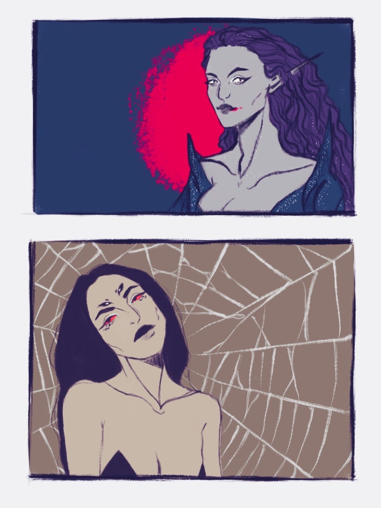

"And he descended upon Arda in power and majesty greater than any other of the Valar, as a mountain that wades in the sea and has its head above the clouds and is clad in ice and crowned with smoke and fire; and the light of the eyes of Melkor was like a flame that withers with heat and pierces with a deadly cold."
-J.R.R. Tolkien, The Silmarillion
Melkorism is the perversion away from Ilúvatarism, often influenced by a deity of malicious intent such as the Dark Lord Morgoth or the Dark Lord Sauron. Melkorism may entail the belief, worship, or dedication to Morgoth or Sauron or may simply be the lack of belief or the turning away of Eru Ilúvatar and the Valar hosts.
Melkor, known also as Morgoth, was the greatest of the Ainur created by Eru Ilúvatar. He rebelled against Eru Ilúvatar when he disrupted the “Great Music” and lead many of the Ainur against Eru Ilúvatar. Committing many of the evils and atrocities of the First Age, which lead to him being called Morgoth, such crimes underneath his belt included the theft of the Silmarils and the destruction of the Two Lamps and the Two Trees of Valinor.
The Two Lamps: Known also as Illuin (“sky-blue” in Quenya) and Ormal (“high gold” in Quenya), they were the “Lamps of the Valar” and stood on the southern and northern ends of Arda in the primeval times. When the Valar entered the world, there was said to be a “misty light veiling the barren ground” and that the Valar took this light and fastened it into two lamps. Helcar was the Northern most tower that housed Illuin and Ringil was the Southern most tower that housed Ormal, forged by the Valar Aulë. The Valar Varda. filled them with light and the great Valar Manwë. hallowed them out—and it was said in the center of Middle Earth where the light of the two lamps met, the vegetation of Yavanna was richer, yet these lamps were destroyed by Melkor and their fall was described as cataclysmic: the weight of the lamps broke continents at their fall and their fire scorched the land, and the original design of the Valar was lost forever—and the Valar not knowing when or where the Children of Eru would come, feared to touch the earth again.
The Two Trees of Valinor: Known also as Telperion and Laurelin, the silver and gold trees that brought light to Valinor (“the Land of the Valar”) after the destruction of the Two Lamps and before the raising of the Moon and Sun. The Valar Yavanna was said to have sung the two trees into existence, Telperion considered to be male and Laurelin, said to be female. The trees sat on a hillside called Ezellohar outside of Valinor, and they grew in the presence of the Valar and were watered by the tears of Nienna. Each tree was a source of light, Telperion the silver, and Laurelin the gold. The first count of time began with the first light of Telperion and began the Years of the Trees. However, an envious Melkor darkened Valinor, and enlisted the help of a spider of the Void named Ungoliant and concealed under darkness, Melkor struck the trees of Valinor, and Ungoliant devoured the light that remained. The last flower of Telperion later became the Moon and the last fruit of Laurelin, became the Sun. and the last true light of the trees before the poisoning of Ungoliant resided in the Silmarils.
The Silmarils: Three gems said to be of immense power and beauty, they were crafted by the Ñoldor, Fëanor who was son of the first King of the Ñoldor, Finwë and later succeeded him after the murder of Finwë. Fëanor was said to be a great craftsman and fashioned the Silmarils and in their heart burned the light of Valinor. The exact making of the Silmarils is unknown to all besides Fëanor and none ever succeeded in replicating their beauty. It is said that the Valar, Valar Varda. hallowed out the Silmarils so that no mortal or evil hands may touch them without being burned or withered. However, the Silmarils were tainted by the arrogance and lust of those who desired them, starting first with Melkor and then with Fëanor. Following the Doom of Mandos, the Silmarils resulted in evil ends such as the Fall of the Noldor, the Oath of Fëanor, Kinslayings, and the destruction of Doriath. As legend had it, Fëanor wore the Silmarils at festivals for the Eldar to admire them, but when Melkor began to desire them, Fëanor locked them up and became greedy. Following the destruction of the Two Trees of Valinor, the Valar begged Fëanor to let them use the remaining light of Telperion and Laurelin, to recreate them, but he refused. Yet word came still to Fëanor that Melkor murdered his father, the High King Finwë and made off with the Silmarils to the Northern lands of Middle Earth where he fastened them into an iron crown after they marred his hands and Fëanor banished himself and his seven sons in pursuit, swearing he would not rest until the Silmarils were secured. The flight of Fëanor concluded in never ending grief for the Elves and Men of Middle Earth in the First Age.
